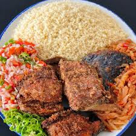

Garba

Description
Un plat ivoirien largment consommé sur le continent africain.
Très doux et rassasiant, ce plat est un véritable régal pour les amateurs de cuisine africaine.
Ingrédients
- Attieké
- Poisson Thon
- Piments frais
- tomate
- Oignon
- Farine
- De l'assaisonnement
Étapes
- Renverser de la farine dans un bol
- Ajouter le poisson thon dans la farine et melangé
- Faire frire le poisson thon dans une poêle
- Verser de l'Attieké dans une assiette
- Ajouter le poisson thon frit sur l'Attieké
- Ajouter les piments frais, les tomates et les oignons
- Ajouter de l'assaisonnement
Accueil